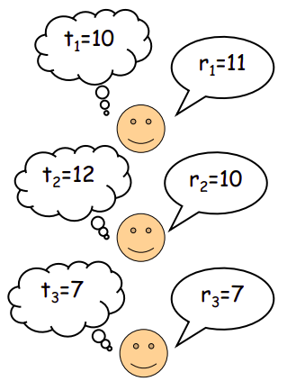
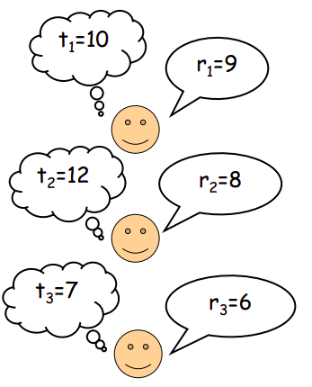
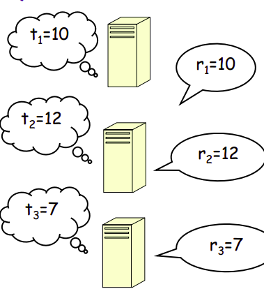

ADRC - Lesson 22
Algorithmic Mechanism Design
Abbiamo visto come ai player nei giochi conviene sempre adottare un comportamento egoistico, il quale però porta spesso pessimi risultati sociali.
Sarebbe quindi ideale progettare dei giochi, con eventuali meccanismi di ricompensa, che incentivino i player ad adottare strategie che portano ad un risultato socialmente buono.
Ovviamente si desidera progettare questi giochi/meccanismi in modo tale che l'outcome socialmente buono si raggiunga in Equilibrio, ovvero deve convenire ai
singoli individui adottare tali configurazioni di strategie che portano all'outcome desiderato.
La differenza sostanziale coi giochi classici visti fin ora è che ogni player possiede delle informazioni private riguardo le proprie preferenze, e nonostante tutto si deisera ottenere un risultato che vada più o meno bene per tutti, anche in presenza di tali informazioni mancanti. Nei giochi standard la funzione costo/guadagno dei giocatori è unica e nota a priori, invece nei giochi indotti dal mechanism design possiamo pensare ad un vettore di funzioni, una per ogni player.
Giochi d'asta
Supponiamo di voler vendere un oggetto prezioso all'asta, alla quale partecipano \(n\) giocatori.
Ogni player \(i\) stiamo con il valore \(t_i\) quanto secondo lui vale l'oggeto all'asta, e quindi quanto è disposto a pagare al massimo.
Tale stima che hanno i diversi giocatori è un'informazione privata.
Ciò che vorremmo è definire un meccanismo d'asta che assegni l'oggeto al player disposto a pagare più di tutti, anche se non abbiamo idea di chi possa essere.
Ovvero si vuole che vinca il player \(i\) con la stima personale \(t_i\) maggiore.
Ogni player farà un'offerta \(r_i\), la quale ovviamente può essere (e deve essere) minore della propria stima personale \(\leq t_i\). Un generico giocatore può quindi mentire, e sottostimare parecchio il valore dell'oggetto, e quindi pagare il meno possibile. Ovviamente però non conviene offrire troppo poco, altrimenti si rischia di non vincere l'asta, e l'obbiettivo di ogni giocatore è proprio quello di vincerla (altrimenti se ne stavano a casa).
Vedendo il guadagno dei player in termini di utilità \(u\), un player che non riesce a comprare l'oggeto avrà utilità \(u = 0\).
Viceversa, se il player \(i\) riesce a vincere l'asta comprando ad un prezzo \(p\), avrà un guadagno finale di \(u_i = t_i - p\).
Per questo motivo infatti un player non deve mai offrire più di quanto stiama, altrimenti anche se vince l'asta il suo guadagno sarà negativo \(u_i < 0\).

Figura 1: Esempio d'asta. Facendo vincere il player che offre di più vincerebbe il player 1. In questo caso non solo il vincitore avrebbe un guadagno negativo, ma otterremo un risultato sicualmente errato. Infatti desideriamo che vinca il player 2, in quanto stima più di tutti il valore dell'oggetto.
Il meccanismo da progettare deve quindi:
- decidere il vincitore
- decidere il pagamento
in modo tale che l'asta non possa essere in qualche modo manipolata.
Un meccanismo molto semplice è il NO-PAIMENT, con le seguenti regole:
- vince chi fa l'offerta \(r_i\) più alta.
- il vincitore paga un prezzo \(p = 0\).
Tale meccanismo non è buono, in quanto a tutti i player converrebbe offrire \(r_i = \infty\), dato che alla fine il pagamento è 0.
Purtroppo però non sarebbe possibile stabilire un vincitore, e quindi nessuno vincerebbe, con un guadagno pari a 0 per tutti i partecipanti.
Un meccanismo migliore è PAY-YOUR-BID, nel quale vince sempre chi fa l'offerta (bid) più alta, e pagherà una quantità pari alla sua offerta.
Ovvero se vince il player \(i\) pagherà un prezzo \(p = r_i\).
Come già accennato, ovviamente l'offerta deve essere minore della propria stima, altrimenti si rischia dicadere in un guadagno negatico, \(r_i < t_i\).
Purtroppo questo meccanismo non garantisce il raggiungimento dell'obbiettivo. Infatti non è detto che chi offre di più sia il colui che ha la stima più alta di tutti.

Figura 2: In questo caso vince il player 1, ma il vincitore desiderato sarebbe il player 2.
Un'altra pecca di questo meccanismo è che un player per massimizzare la probabilità di vincere l'asta deve necessariamente porre la propria offerta \(r_i\) il più alta possibile,
purtroppo però aumentando \(r_i\) diminuisce il guadagno finale \(u_i = t_i - r_i\).
Un meccanismo elegante e vincente è il cosiddetto Vickrey’s second price auction, nel quale vince chi offre di più e paga quanto l'offerta del secondo classificato.
Più formalmente, siano \(i,j\) i primi due giocatori in ordine di offerte, ovvero \(r_i\) è l'offerta massima, e \(r_j\) è la seconda più alta.
In tal caso il vincitore sarà \(i\) è pagherà il prezzo \(p = t_j\), con un'utilità complessiva pari a \(u_i = t_i - t_j \geq 0\).
THM
Nel meccanismo Vickrey’s second price auction, per ogni player \(i\) offrire \(r_i = t_i\) è una strategia dominate, ovvero conviene sempre essere sinceri indipendentemente dalle azioni degli altri.
Proof: Fissiamo un qualsiasi player \(i\), la sua relativa stima \(t_i\) e osserviamo le possibili strategie che può adottare.
Consideriamo il valore \[ R = \max_{j \neq i}{r_j} \] ovvero la massima offerta tra tutti i player escluso il player \(i\).
- Case \(t_i \geq R\)
- Se il player \(i\) offre \(r_i = t_i\) esso vincerà di sicuro, perché \(r_i = t_i \geq R\), con un'utilità non negativa \(u_i = t_i - R \geq 0\). Se invece \(i\) offore \(r_i \neq t_i\), per quanto osservato certamente non conviene mai offire più della propria stima, quindi necessariamente \(r_i < t_i\). Esso ha possibilità di vincere solo se \(r_i \geq R\), ottenendo comunque lo stesso guadagno del caso \(r_i = t_i\). Se invece \(r_i < R\) certamente \(i\) perde e ottiene un guadagno nullo. \[ r_i = t_i \implies u_i = t_i - R \geq 0\\ \\ r_i \neq t_i \begin{cases} r_i > R &\implies u_i = t_i - R \geq 0\\ r_i \leq R &\implies u_i = 0 \end{cases} \] Perciò, l'offerta che massimizza la possibilità di vittoria (e di ottenere un guadagno non negativo) è \(r_i = t_i\).
- Case \(t_i < R\)
- Se \(i\) offre \(r_i = t_i\), dato che \(t_i < R\), certamente non vincerà, ottenendo un guadagno nullo \(u_i = 0\). Vediamo invece che accade se invece \(i\) offre \(r_i \neq t_i\). Se \(r_i < R\) nuovamente \(i\) non vince e otterrà guadagno nullo \(u_i = 0\). Se invece \(r_i \geq R\), allora \(i\) dovrà pagare una quantità pari ad \(R\). Infatti, se \(r_i \geq R\), allora la seconda offerta più alta sarà proprio pari ad \(R\). E dato che \(t_i < R\) avremo un guadagno negativo \(u_i = t_i - R < 0\) \[ r_i = t_i \implies u_i = 0\\ \\ r_i \neq t_i \begin{cases} r_i > R &\implies u_i < 0\\ r_i \leq R &\implies u_i = 0 \end{cases} \] Perciò, anche in questo caso, la strategia migliore per il player \(i\) è quella di porre \(r_i = t_i\), indipendentemente dalle offerte degli altri \(\square\).
Forma di Minimizzazione
Nel gioco dell'asta ogni player voleva massimizzare la propria utilità \(u_i\).
È possibile esprimere la stessa tipologia di giochi in forma di minimizzazione, in cui si desidera minimizzare un certo costo sociale.
Per esempio supponiamo il caso in cui dobbiamo scegliere una macchina a cui assegnare un job.
Ogni macchina ha un costo di utilizzo \(t_i\) che non è noto a nessuno (informazione privata), e se la macchina \(i\) riceve il job avrà un pagamento \(p\).
In questo caso l'utilità della macchina \(i\) sarà la quantità \(u_i = p - t_i\), ovvero pagamento ricevuto meno costo d'utilizzo.
Ogni macchina propone un costo \(r_i\) che rappresenta quanto è il suo costo d'utilizzo.
Si desiderà progettare un meccanismo che assegni il job alla macchina con costo d'uso \(t_i\) minimo.
Ogni macchina concorre per l'assegnazione del job, perciò avremo che \(r_i \leq t_i\).
Infatti se \(r_i > t_i\) si rischia di non essere scelti per l'assegnazione del job, ottenendo quindi un guadagno nullo \(u_i = 0\).
È possibile dimostrare che anche nella versione di minimizzazione il meccanismo Vickrey's second price (con le opportune modifiche) induce i player a porre \(r_i = t_i\) come strategia dominante. Più precisamente le regole della strategia sono:
- vince il player \(i\) con offerta \(r_i\) minima.
- il pagamento \(p\) dato al vincitore \(i\) è pari alla seconda offerta \(r_j\) meno costosa.
In questo caso l'utilità di \(i\) sarà pari a \(u_i = r_j - t_i \geq 0\).

Figura 3: In questo caso vince la macchina 3, ottenendo un pagamento di 10.
Ingredients
Generalizziamo il Mechanism Design Problem (in breve MDP).
Abbiamo un insieme di \(N\) player non cooperativi, ognuno dei quali avente un' informazione privata \(t_i \in T_i\) detta type (o tipo).
Esiste un'insieme di outcomes possibili \(F\).
Per ogni combinazione di tipi \(t = (t_1, t_2, ..., t_N)\), una scelta sociale \(f\) è una funzione
Ogni player \(i\) sceglie un strategia da adottare \(r_i\) in uno spazio delle possibili strategie \(S_i\).
Restringiamoci solo ai casi in cui spazio delle strategie e spazio delle informazioni private coincidono, ovvero solo i casi in cui \(S_i \equiv T_i\).
Per esempio, considerando il gioco dell'asta, l'sieme \(F\) degli outcomes possibili equivale all'insieme degli \(n\) offerenti, mentre la funzione di scelta sociale è quella in cui si sceglie l'offerente con informazione privata \(t_i \in T_i\) muinima tra tutti. \[ f(t) = arg \min_i {t_i} \]
Per ogni possibile outcome \(x \in F\), ogni player \(i\) effettua una valutazione \(v_i(t_i, x)\), che indica la preferenza di \(i\) rispetto al possible outcome \(x\).
Più precisamente indica quanto il player \(i\) spende se adotta la strategia \(t_i\) e se il player \(x\) vince il gioco.
Per sempio, tornando al gioco d'asta, avremo che
\[
v_i(t_i, x) = \begin{cases}
p &\mbox{se } x = i\\
0 &\mbox{se } x \neq i\\
\end{cases}
\]
Viceversa, nel gioco di assegnazione dei job, avremo che
\[
v_i(t_i, x) = \begin{cases}
t_i &\mbox{se } x = i\\
0 &\mbox{se } x \neq i\\
\end{cases}
\]
Per ogni configurazione di strategie \(r \in S_1 \times S_2 \times ... \times S_N\), ogni player \(i\) riceve un pagamento \(p_i(r) = p_i\).
I pagamenti (o guadagni) vengono impiegati dal sistema per incentivare gli individui ad essere onesti/collaborativi.
Per esempio nel gioco d'asta il premio il giocatore che vince equivale alla propria stima personale dell'oggetto all'asta, perciò sia \(i\)
il giocatore che vince l'asta, esso avrà un premio pari a \(p_i(r) = t_i\).
Viceversa nel gioco dell'assegnazione dei jobs il premio equivale a quanto il sistema paga la macchina a cui viene assegnato il job.
A questo punto possiamo descrivere l'utilità dei player come la differenza tra il prorpio guadagno e la propria valutazione di spesa.
Più formalmente, sia \(r \in S_1 \times S_2 \times ... \times S_N\) una data configurazione di strategie, e sia \(x(r) \in F\) l'outcome se applicato \(r\),
allora l'utilità di un generico giocatore \(i\) sarà la quantità
\[
u_i(t_i, x(r)) = p_i(r) - v_i(t_i, x(r))
\]
Notiamo quindi che a prescindere se il problema è di massimizzazione o minimizzazione, ogni player vuole sempre massimizzare la propria utitlità \(u_i\).
Abbiamo ora tutti gli ingredienti per definire formalmente un MDP.
Un meccansimo \(M = \langle g(r), p(r) \rangle\) è una coppia composta da:
- \(g(r)\): un algoritmo che consente di calcolare l'outcome \(x = g(r)\) in funzione alle strategie riportate in \(r\).
- \(p(r)\): uno schema di pagamenti che indica gli incentivi che i giocatori devono avere in accordo alle strategie in \(r\).
Si vuole quindi progettare un meccanismo \(M\) in modo tale \(g(r) = f(t)\) in accordo al concetto di equilibrio relativo all'utilità \(u_i\),
che a sua volta notiamo dipendere dallo schema di pagamenti \(p(r)\).
DEF: Un meccanismo \(M = \langle g(), p() \rangle\) è una implementazione con strategie dominanti se esiste un vettore di strategie riportate \(r^* = (r^*_1, r^*_2, ..., r^*_N)\) tale che \(f(t) = g(r^*)\) è un equilibirio di strategie dominanti. Ovvero se, per ogni player \(i\) e per ogni configurazione di strategie \(r = ( r_1, r_2, ..., r_N)\) avremo che \[ u_i(t_i, g(r_{-i}, r^*_i)) \geq u_i(t_i, g(r_{-i}, r_i)) \] ovvero la strategie \(r_i\) è dominante per il player \(i\).
[DA FINIRE…]